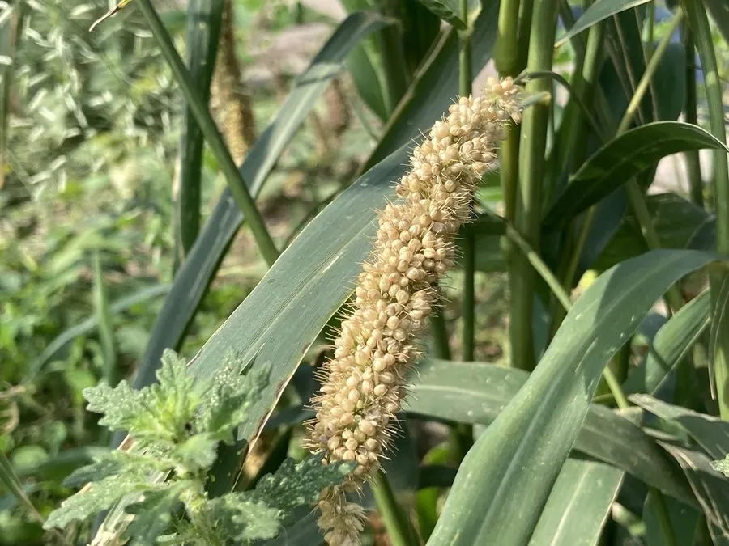

农作物与经济植物 · 植物界
谷子 Setaria italica

谷子脱壳后就是小米，是我国北方传统的粮食作物，它耐旱、耐瘠薄，栽培历史可追溯到约八千年以前。
- 分类
- 门被子植物门纲单子叶植物纲目禾本目科禾本科属狗尾草属
- 栖息环境
- 温带干旱半干旱地区的旱地，耐旱耐瘠薄、生育期短
- 地理分布
- 原产中国黄河流域，现主产于中国北方、印度等地
- 保护级别
- 暂无评估（栽培作物）
物种志
谷子是一年生草本，株高 0.6–1.5 m，茎秆直立，叶片披针形。圆锥花序顶生，穗形有纺锤形、圆筒形、棍棒形等，成熟时下垂，籽粒小，球形，颜色有黄、白、红、黑等，脱壳后即小米。谷子的根系发达，耐旱性强，是典型的旱地作物。
谷子原产中国黄河流域，考古证据显示中国在约 8000 年前已开始驯化谷子，是世界上最古老的栽培作物之一。它耐旱、耐瘠薄、生育期短，适合在干旱半干旱地区种植，曾长期是中国北方的主粮。小米富含蛋白质、维生素 B 族和矿物质，可煮粥、蒸饭、磨粉，是产妇与体弱者的滋补食品；谷草是优质饲料，谷糠可作饲料与酿酒辅料。如今谷子更多作为杂粮和特色作物种植。
形态与习性
- 株高0.6–1.5 m
- 花序圆锥花序，穗形多样
- 籽粒脱壳后即小米
- 耐性耐旱耐瘠薄，生育期短
- 食用小米粥、小米饭
- 历史约 8000 年前在中国驯化
趣味知识
- 谷子脱壳后就是小米，是我国北方传统的主粮之一。
- 谷子约 8000 年前在黄河流域被驯化，非常耐旱。
- 小米富含维生素 B 族，常被用来熬粥滋补身体。